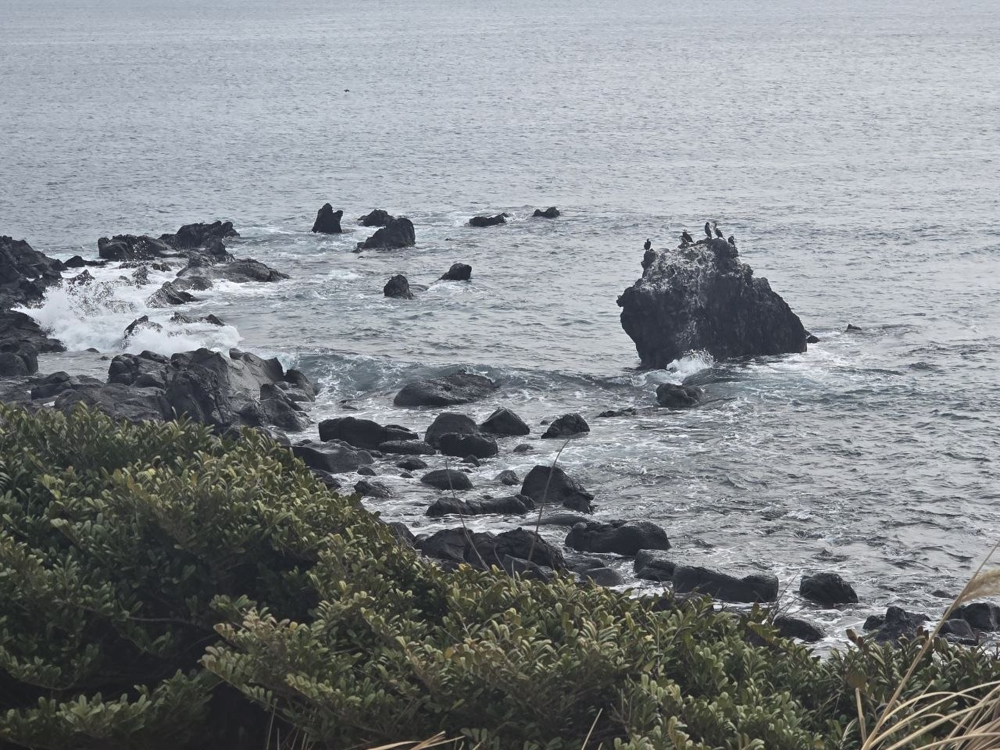

Brand Story
Deep Dive into Essence
"Most birds fly over the ocean, but O5I dives into it."
관습적 보호막을 걷어내고 목적에 최적화된 인프라를 구축한다
기술과 현장, 데이터와 실재의 경계를 허물어 하나의 흐름으로 만든다
환경의 에너지를 흡수하여 자신의 동력으로 전환하는 유연한 협업
방대한 정보에서 핵심 가치를 식별하고 최단 거리 솔루션을 도출한다
보편적 방식을 따르지 않고 독창적 관점으로 독보적 존재감을 만든다
🪶 가마우지를 만난 날

제주 표선면 신천해안. 파도가 부서지는 검은 용암 바위들 사이, 가장 높은 바위 꼭대기를 한 무리의 가마우지가 점령하고 있었다. 갈매기도, 백로도 아닌 — 검고 묵직한 새들이 바다를 등지고 앉아 있었다. 바위 위의 하얀 자국은 이들이 오래전부터 이 자리를 지켜왔다는 증거다.
가마우지는 다른 바닷새와 근본적으로 다르다. 대부분의 새는 깃털에 기름을 발라 물을 튕겨내지만, 가마우지는 방수를 포기했다. 깃털이 물을 흡수하면 부력이 사라진다. 덕분에 수심 46m까지 잠수할 수 있다. 하늘에서 급강하하는 다른 새들과 달리, 수면에서 조용히 제자리에서 입수한다. 화려하지 않지만, 가장 깊은 곳에 도달하는 방식이다.
사냥을 마치면 바위 위에서 젖은 날개를 활짝 편다. 햇볕에 말리는 것이다. 남들이 보기엔 기괴하다. 하지만 그 자세는 — 자신의 취약함을 숨기지 않고, 다음 사냥을 위해 시스템을 정렬하는 가장 정직한 행위다. 이동할 때도 높이 날지 않는다. 수면을 스치듯 낮게 비행하며 에너지를 아끼고, 동시에 물속 먹이를 관찰한다.
El Nino & Guano
19세기 페루 연안에서 가마우지는 경제를 움직이는 새였다. 수백만 마리가 쏟아낸 배설물 — 구아노(guano) — 은 세계 최고의 천연비료였고, 페루 수출의 60%를 차지했다.
그런데 몇 년에 한 번, 크리스마스 무렵 바닷물이 이상하게 따뜻해지면 어류가 사라지고, 가마우지가 굶어 죽고, 구아노 생산이 붕괴했다. 어부들이 이 현상을 "El Nino"(아기 예수)라 불렀다. 인류가 엘니뇨를 처음 인식한 건, 가마우지의 죽음을 통해서였다.
해양과학의 가장 중요한 기후현상 발견이 가마우지에서 시작되었다는 사실 — O5I가 이 새를 상징으로 삼은 이유이기도 하다.
O5I는 범용 AI가 표면만 훑고 지나가는 바다의 본질에, 가마우지처럼 직접 뛰어든다.
가마우지의 세 가지 모습
젖은 날개를 숨기지 않고, 바위 위에서 당당히 다음 사냥을 준비한다
부력을 이겨내고 수심 깊은 곳까지 내려가 확실한 성과를 건져 올린다
높이 날지 않는다. 수면 바로 위, 바다에 가장 가까운 곳을 비행한다
Why we dive — 5 Principles
통념의 파괴
관습적 안정장치를 버리고 본질에 집중. 범용 AI가 표면만 훑을 때, O5I는 도메인의 바닥까지 내려간다.
조용한 입수
하늘에서 급강하하지 않는다. 수면에서 조용히 입수해 가장 깊은 곳에 도달. 화려하지 않지만 가장 효율적인 방식.
수면 비행
높이 날지 않는다. 수면을 스치듯 낮게 비행하며 탐색과 효율을 동시에 달성. 문제에 가장 가까운 높이에서 움직인다.
투명한 당당함
젖은 날개를 숨기지 않고 다음 도약을 준비. 기존 문법으로 해석되지 않는 방식을 택하되, 결과물로 증명한다.
심해 사냥
부력을 이겨내고 가장 깊은 곳까지 내려가 확실한 성과를 건져 올린다. 누구보다 정밀한 가치를 도출.

방수를 포기해서 더 깊이 잠수하고, 높이 날지 않아서 더 정확히 관찰하고,
젖은 날개를 햇볕과 바람에 말려서 더 빨리 다음을 준비하는 새.
O5I는 가마우지에게서 겉멋을 벗어던지고, 효율적으로 본질에 도달하는 법을 배웠습니다.
"Most birds fly over the ocean, but O5I dives into it."